marcelo sousa
- multimedia
- ux/ui design
- digital marketing
multimedia designer with a passion for human-centered design and creating engaging digital experiences. soundscape wanderer 🦗 and curry-based 🛠food enthusiast.
Artwork exhibited in Porto Post Doc↗, Semibreve↗, and Espaço MIRA↗.
Have an interesting topic or project you'd like to discuss? Get in touch↗.
behance↗ ː github↗ ː linkedin↗.